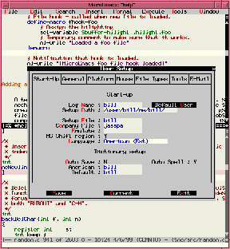

|
| Home | Overview | What's New | Support | Download | About |
| Jasspa's MicroEmacs |
|
||
|
Welcome to www.jasspa.com, the web site for the distribution of JASSPA's MicroEmacs. This site first appeared on-line on 12th January 2000. |
|||
|
Jasspa's MicroEmacs is an Emacs editor biased towards
UNIX users, working across platforms by providing a
consistent interface under UNIX, Microsoft Windows
'95/'98/NT and DOS operating systems. |
December 2002 (12.2002) is the latest release.
You can download the source and/or binaries from this site.
January 2004 (02.2004) is the latest stable release candidate (RC4). |
||
|
Jasspa's MicroEmacs now licensed under GPL.
Special thanks to Danial M. Lawrence, the original author and copyright holder of MicroEmacs, for granting us permission to change the licensing terms of our distribution. NanoEmacs, a minimal version of JASSPA's MicroEmacs is
now available in the latest release. |
 |
||
|
|||
|
|
|||
Copyright © 2000-2002 Jasspa
![[CDROM]](images/cdexec.jpg)